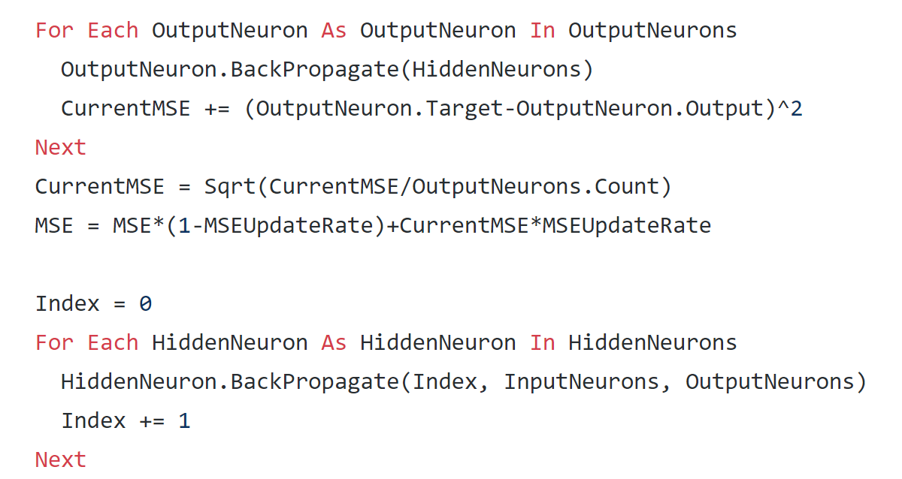
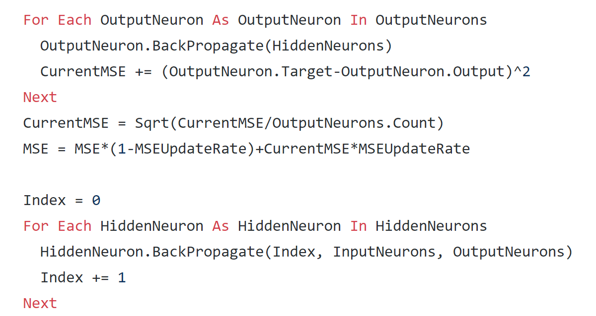
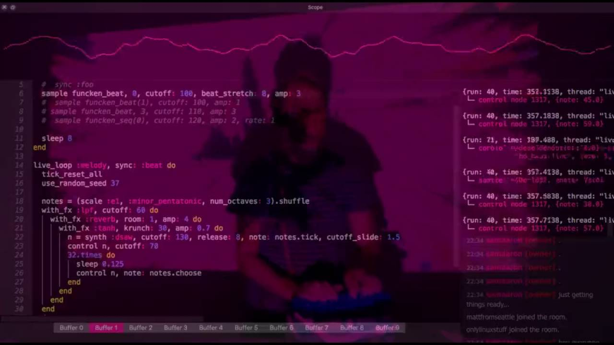
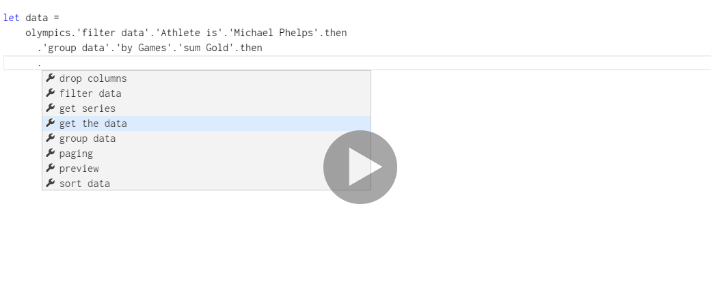
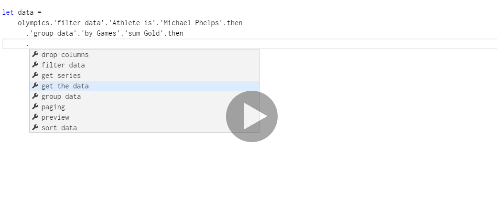

CO582: Computer Interaction and User Experience
Programmers and other specialist users
Tomas Petricek
email: t.petricek@kent.ac.uk
twitter: @tomaspetricek
office: S129A
Programming languages and tools
Programming languages and tools
What programmers work with
- Language syntax
- Development environments
- Debugging & reading tools
How programmers interact
- Bring punch cards and wait (1950s)
- Connect to mainframe using terminal (1970s)
- Editor with graphical interface (1980s)
Programming languages and tools
Programmers are users too!
What language syntax is easy to understand?
What programming abstractions fit mental models?
What tools can help making sense of code?
What real programmers actually struggle with?
 

Syntax: APL and Visual Basic .NET
User experience
What is easier to write or read?
What matters more in practice?
Does this matter for expert users?

Integrated Development Environments
Offer relevant help in context
How to assist with writing, debugging, navigating
Interacting with programming systems
Classic software engineering
- Implement one feature
- Compile your project
- Run and provide inputs
Live coding, data science
- Load data in advance
- Edit program interactively
- See new results on the fly and repeat

REPL - Read, Eval, Print Loop
Type line, run it, see result
Immediate feedback, but limited interaction

Jupyter Notebooks
REPL with chart output
Can edit previous notebook cells
What is the mental model of execution?

Excel
Why finance and insurance companies (over)use it
so much?

Other forms of interactions
Programming by example
Programming languages and tools
What can we study using user experience methods
Compare syntax using controlled studies
Heuristic evaluation (consistency, system status)
How are systems used in corporate environment?
GOMS models of data analysis tasks
Metaphors for understanding code abstractions
Code, languages and notations
Code, languages and notations

Language syntax
- Symbols or words
- Structure of nesting
- How much it matters?
Programming as writing
- How we compose programs?
- Top-down vs. bottom-up
- Metaphors used in code

An empirical investigation into program-ming lang-uage syntax
Which of them is easier to use?
Controlled lab study, using 6 simple tasks
Code, languages and notations
An empirical look at programming language syntax
Statistically significant, scientific results
Used as a basis for Quorum language design
Random language is better than Perl!
Limited scope - syntax might be detail
Novices only - hard to evaluate with experts
Metaphors for variables

Variable is like a label
A variable is like a label that one can place on one value, like a temperature or the age of a person
Variable is like a box
A variable is like a box that can contain a value, like a piggy bank or a shoe box.
Comparing metaphors for variables in programming education
Variable as a label or as a box
Taught ~200 using label and ~200 using box
Student using box metaphor did better
Box leads to multiple values misconception
Metaphor used for learning programming
Teaching programming
Teaching programming

Learning how to program is hard
- How to make it easier?
- What language to teach?
- Design a better one?
Designing a teaching language
- Using principles from psychology
- Experiments to drive design
- Experiments to evaluate options
LOGO and Turtle graphics
Turtle moves around screen with a pen
Logo: Developmental psychology principles

Learning by doing
- Jean Piaget's constructivism
- Create knowledge by interacting
Stages of cognitive development
- Sensorimotor stage
- Preoperational stage
- Concrete operational stage
- Formal operational stage

Scratch
Learning by doing tradition
Supports multiple cognitive stages
Teaching programming
Using experiments to guide language design
How novices think about programming?
Conceiving vs. formalising solution
Write natural language solution
Design language to support the patterns

"Programming" a Pacman
Write a statement that summarizes how computer should move Pacman
Twelve 10 year olds
Responses categorized
by 5 CS students
Programming style
54% - rules or event-based
When Pacman eats all dots, he goes to the next level
18% - global constraints Cannot go through a wall
16% - declarations/other
There are 4 monsters.
12% - imperative
Display this string.
Play this sound.

HANDS System: Logic written using event-based rules!
Code, navigation and search
Code, navigation and search

Searching through code
- Most of time is spent understanding code
- Navigation through codebase
Searching through possibilities
- Search as a metaphor for problem solving
- Searching for the right program

Code search
Study what developers search for
and why
Searching through code
Code search study from Google
Using data from logs and surveys
Analyze techniques and motivations for search
Finding very (17%) or somewhat (44%) familiar code
Learning how code works (46%) or how to use it (21%)
Searching through state space

State space
- Possible game states
- User interface options
- Possible programs
Interaction questions
- Depth of the goal
- Breath-first or depth-first
- Allow lookahead when searching
 
{kind=link}
Programming interaction as search
Searching for a program in program space
Summary
Programmers and other specialist users
Applying HCI methods in practice
Problems: Improving efficiency and understanding
Methods: Surveys, studies, metaphors, log analysis
Teaching programming to novices
What is the best metaphor for variables?
What is natural language of programming?
Human computer interaction as search
Searching for options in user interface
Searching the space of possible programs
CO582: Programmers and other specialist users
What you should remember from this lecture
- Kinds of question and methodology, not problems
- Usability, efficiency, ease of comprehending
- Expert analysis, experiments and their limitations
Tomas Petricek
t.petricek@kent.ac.uk | @tomaspetricek
References
Books
- Human Error, James Reason
- The Design of Everyday Things, Don Norman
Papers and links
- Experimental Study of Vertical Flight Path Mode Awareness, Eric N. Johnson, Amy R. Pritchett
code search https://static.googleusercontent.com/media/research.google.com/en//pubs/archive/43835.pdf
pacman http://alumni.cs.ucr.edu/~ratana/PaneRatanamahatanaMyers00.pdf
hci http://www.pgbovine.net/what-is-hci-research.htm
felienne http://www.felienne.com/archives/6063
How do people naturally think about computation? Cyrus Omar https://www.cs.cmu.edu/~comar/NaturalComputation.pdf